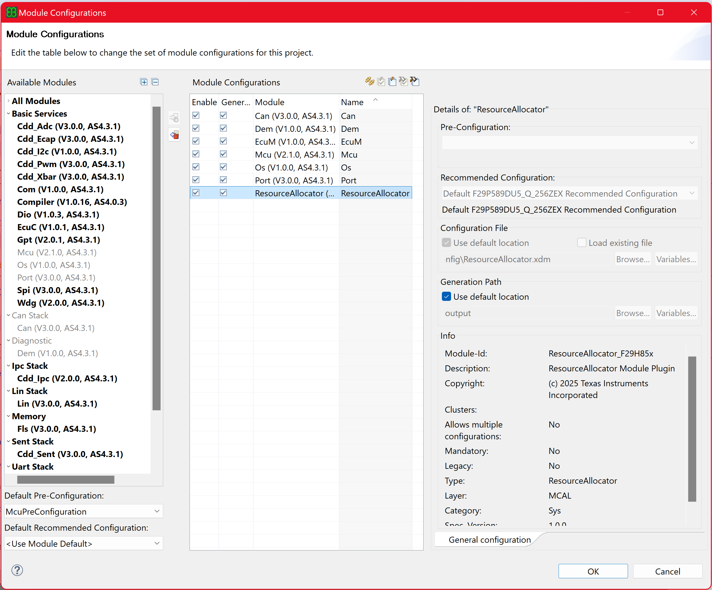
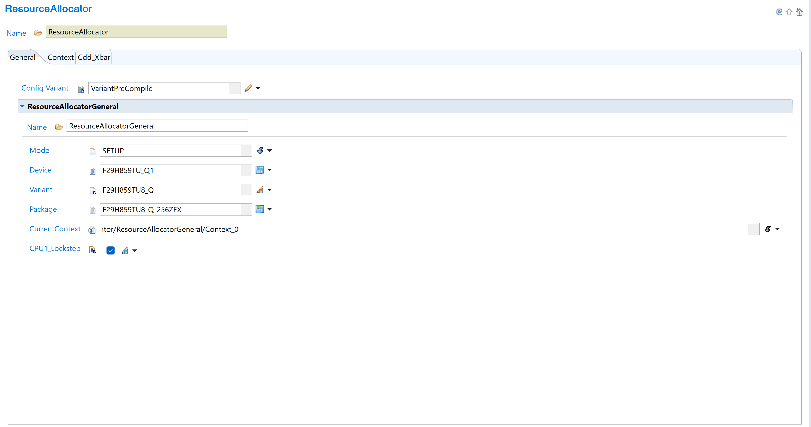
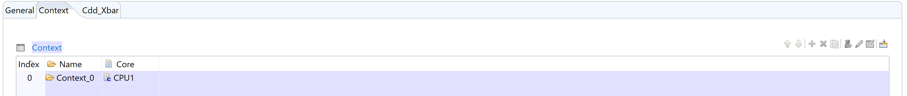

6.1. Resource Allocator Module
Release Version: 01.04.00 Module Version: 1.00.00
The Resource Allocator module is introduced in MCAL release 01.04.00 as a mandatory foundational configuration module. It centralizes hardware resource management and provides device-specific configuration to all MCAL modules. Resource Allocator is not available in earlier versions.
The Resource Allocator is a configuration-only module introduced in MCAL release 01.04.00 as the mandatory foundation for hardware resource management.
6.1.1. Module Setup and Configuration
6.1.1.1. Step 1: Add ResourceAllocator Module to Project
Open EB Tresos Studio with your project
Right-click on the project in Project Explorer
Select “Add/Remove Software Modules”
In the Available Modules list, locate “ResourceAllocator”
Select ResourceAllocator and click “Add”
Click “Finish” to add the module to your project
Note
User shall load the ResourceAllocator module with recommended configuration for your device variant.
{kind=link}

Fig. 6.1 Add ResourceAllocator module to project
6.1.1.2. Step 2: Configure ResourceAllocator General Settings
Navigation Path: ResourceAllocator → ResourceAllocatorGeneral
Device Configuration Parameters:
Device: Select your F29H85x device (e.g., F29H859DU_Q1)
Variant: Select device variant (e.g., F29H859DU6_Q)
Package: Select appropriate package (e.g., F29H859DU6_Q_144RFS)
{kind=link}

Fig. 6.2 Configure ResourceAllocator device, package, and context settings
6.1.1.3. Context Selection
Execution context defines which CPU core handles MCAL module operations. Context_0 is a user-defined name that can be customized.
As AUTOSAR is expected to run on CPU1, only CPU1 can be selected here. In future support will be added to define non-AUTOSAR context.
Configuration: Navigate to ResourceAllocatorGeneral → Context and configure Context_0.
{kind=link}

Fig. 6.3 Configure CurrentContext - Context_0 is a user-defined name
All MCAL modules will operate on the configured context.